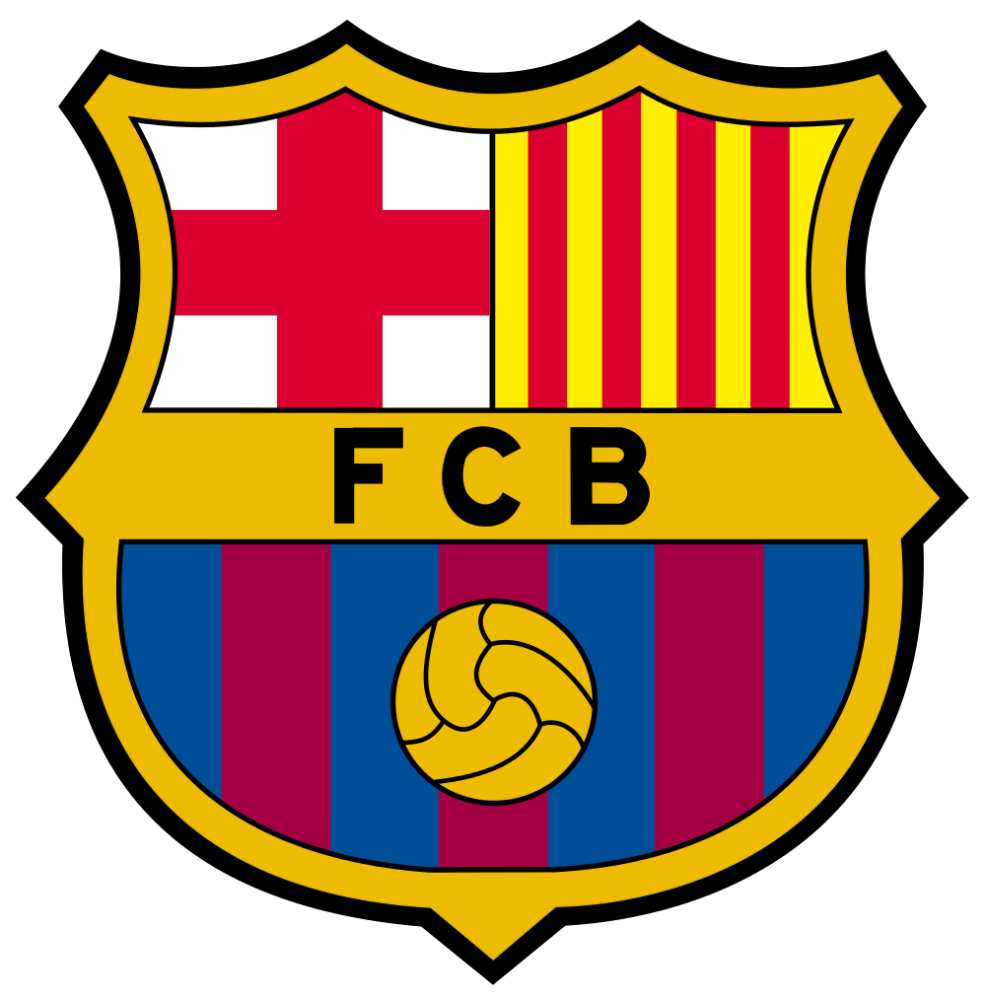
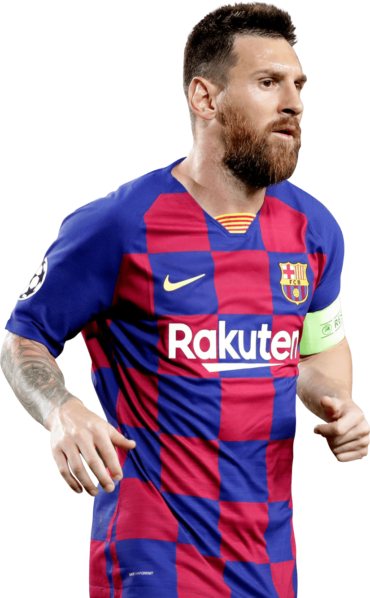

-
Founded in 1899 by a group of Swiss, Spanish, English, and Catalan footballers led by Joan Gamper, the club has become a symbol of Catalan culture and Catalanism, hence the motto "Més que un club" ("More than a club"). Unlike many other football clubs, the supporters own and operate Barcelona. It is the fourth-most valuable sports team in the world, worth $4.06 billion, and the world's richest football club in terms of revenue, with an annual turnover of €840.8 million.[2][3] The official Barcelona anthem is the "Cant del Barça", written by Jaume Picas and Josep Maria Espinàs.[4] Barcelona traditionally play in dark shades of blue and red stripes, leading to the nickname Blaugrana.
Domestically,
- Barcelona has won a record 74 trophies: 26 La Liga, 31 Copa del Rey, 13 Supercopa de España, 3 Copa Eva Duarte, and 2 Copa de la Liga trophies, as well as being the record holder for the latter four competitions. In international club football, the club has won 20 European and worldwide titles: 5 UEFA Champions League titles, a record 4 UEFA Cup Winners' Cup, a joint record 5 UEFA Super Cup, a record 3 Inter-Cities Fairs Cup, and 3 FIFA Club World Cup.[5] Barcelona was ranked first in the International Federation of Football History & Statistics Club World Ranking for 1997, 2009, 2011, 2012, and 2015[6][7] and currently occupies the second position on the UEFA club rankings.[8] The club has a long-standing rivalry with Real Madrid, and matches between the two teams are referred to as El Clásico.
-
Barcelona is one of the most widely supported teams in the world, and the club has one of the largest social media following in the world among sports teams.[9][10] Barcelona players have won a record number of Ballon d'Or awards (12), with recipients including Johan Cruyff, as well as a record number of FIFA World Player of the Year awards (7), with winners including Ronaldo, Romário, Ronaldinho, and Rivaldo. In 2010, three players who came through the club's youth academy (Lionel Messi, Andrés Iniesta, and Xavi) were chosen as the three best players in the world in the FIFA Ballon d'Or awards, an unprecedented feat for players from the same football school. Additionally, players representing the club have won a record number (8) of European Golden Shoe awards.
- Barcelona is one of three founding members of the Primera División that have never been relegated from the top division since its inception in 1929, along with Athletic Bilbao and Real Madrid. In 2009, Barcelona became the first Spanish club to win the continental treble consisting of La Liga, Copa del Rey, and the UEFA Champions League, and also became the first Spanish football club to win six out of six competitions in a single year, by also winning the Spanish Super Cup, UEFA Super Cup, and FIFA Club World Cup.[11] In 2011, the club became European champions again and won five trophies. This Barcelona team, which won 14 trophies in just 4 years under Pep Guardiola, is considered by some in the sport to be the greatest team of all time.[12][13][14] By winning their fifth Champions League trophy on 6 June 2015, Barcelona became the first European football club in history to achieve the continental treble twice. The highest paid sports team in the world, in November 2018 Barcelona became the first sports team with average first-team pay in excess of £10m ($13.8m) per year.[15][16]
The most famous player in the club history

Lionel Andrés Messi
- Born and raised in central Argentina, Messi relocated to Spain to join Barcelona at age 13, for whom he made his competitive debut aged 17 in October 2004. He established himself as an integral player for the club within the next three years, and in his first uninterrupted season in 2008–09 he helped Barcelona achieve the first treble in Spanish football; that year, aged 22, Messi won his first Ballon d'Or. Three successful seasons followed, with Messi winning four consecutive Ballons d'Or, making him the first player to win the award four times and in a row.[11] During the 2011–12 season, he set the La Liga and European records for most goals scored in a single season, while establishing himself as Barcelona's all-time top scorer. The following two seasons, Messi finished second for the Ballon d'Or behind Cristiano Ronaldo (his perceived career rival), before regaining his best form during the 2014–15 campaign, becoming the all-time top scorer in La Liga and leading Barcelona to a historic second treble, after which he was awarded a fifth Ballon d'Or in 2015. Messi assumed the captaincy of Barcelona in 2018, and in 2019 he secured a record sixth Ballon d'Or.
-
An Argentine international, Messi is his country's all-time leading goalscorer. At youth level, he won the 2005 FIFA World Youth Championship, finishing the tournament with both the Golden Ball and Golden Shoe, and an Olympic gold medal at the 2008 Summer Olympics. His style of play as a diminutive, left-footed dribbler drew comparisons with his compatriot Diego Maradona, who described Messi as his successor. After his senior debut in August 2005, Messi became the youngest Argentine to play and score in a FIFA World Cup during the 2006 edition, and reached the final of the 2007 Copa América, where he was named young player of the tournament. As the squad's captain from August 2011, he led Argentina to three consecutive finals: the 2014 FIFA World Cup, for which he won the Golden Ball, and the 2015 and 2016 Copa América. After announcing his international retirement in 2016, he reversed his decision and led his country to qualification for the 2018 FIFA World Cup, and a third-place finish at the 2019 Copa América.
Best players in barca over past years of this century